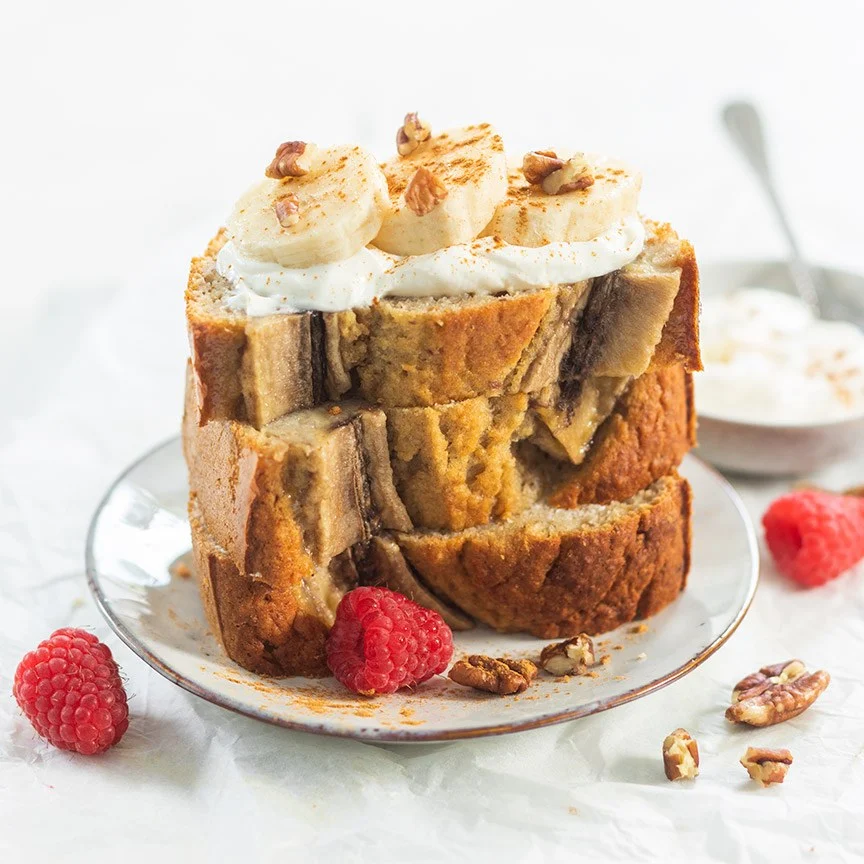

Banana Bread

Description
Make your own healthy and delicious banana bread with this easy basic recipe with
only 7 ingredients! Naturally sweetened by banana and a pinch of cinnamon.
Ingredients
- 4 ripe bananas
- 3 eggs
- 160 gr spelled flour
- 80 gr almond flour
- pinch cinnamon
- 0.5 sachet baking powder
- 3 dates (fresh) tbsp.
Steps
-
Preheat the oven to 180 degrees. Place the dates in warm water for 5 minutes to
soften them a bit, remove the pit and cut into pieces. Place 3 bananas with the
eggs, cinnamon and dates in a food processor and blend until smooth. Place in a
bowl and fold in the spelled flour, almond flour and baking powder.
-
Pour the batter into a cake tin and place a halved banana on top. Bake the banana
bread in the oven for about 50 minutes. Then check with a skewer whether the
healthy banana bread is cooked.
-
Tips: You can also add raisins, nuts and/or fruit to the batter. Store the banana
bread covered with foil or freeze it in slices. So you always have a healthy
snack at hand.